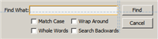
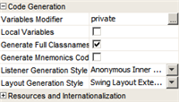
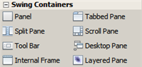
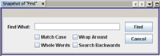

{kind=link}
Professional Swing GUI Building
Design Swing GUIs by dragging and positioning GUI components from a palette onto a canvas.
The GUI builder automatically takes care of the correct spacing and alignment.
Click into JLabels, JButtons, ButtonGroups, JTrees, JTextFields, ComboBoxes
and edit their properties directly in place.
You can use the GUI builder to prototype GUIs right in front of customers.
Introduction to GUI Building
Intuitive and Customizable
You can choose whether the GUI code should be generated with fully qualified or simple class names. The helpbar displays context-sensitive hints about what can be done with the selected component and suggests shortcuts that can speed up your work in the future. The NetBeans IDE also comes with built-in support for GUI localization and accessibility.


Standard and Custom GUI Components
The extensible Component Palette comes with pre-installed Swing and AWT components and includes a visual menu designer. Use the Component Navigator to view a component's tree and properties.

Visual Debugger
Debug a Swing GUI application without looking into the source code and control the execution flow in terms of high-level structures. Choose Take GUI Snapshot to make a screenshot of the application GUI that serves as a basis of the Visual Debugger functionality.
Using the Visual Debugger
